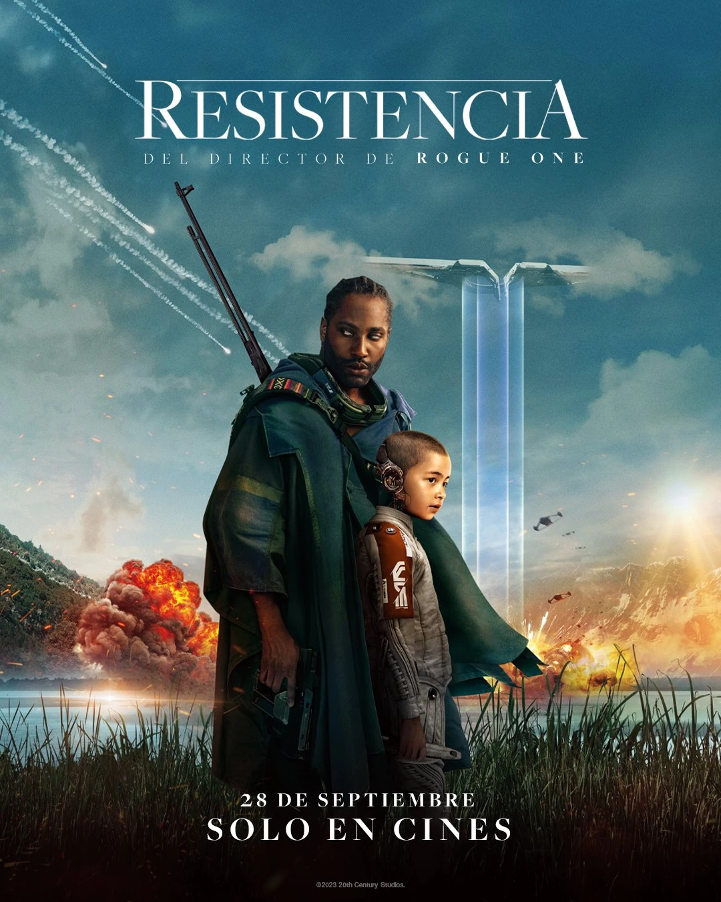
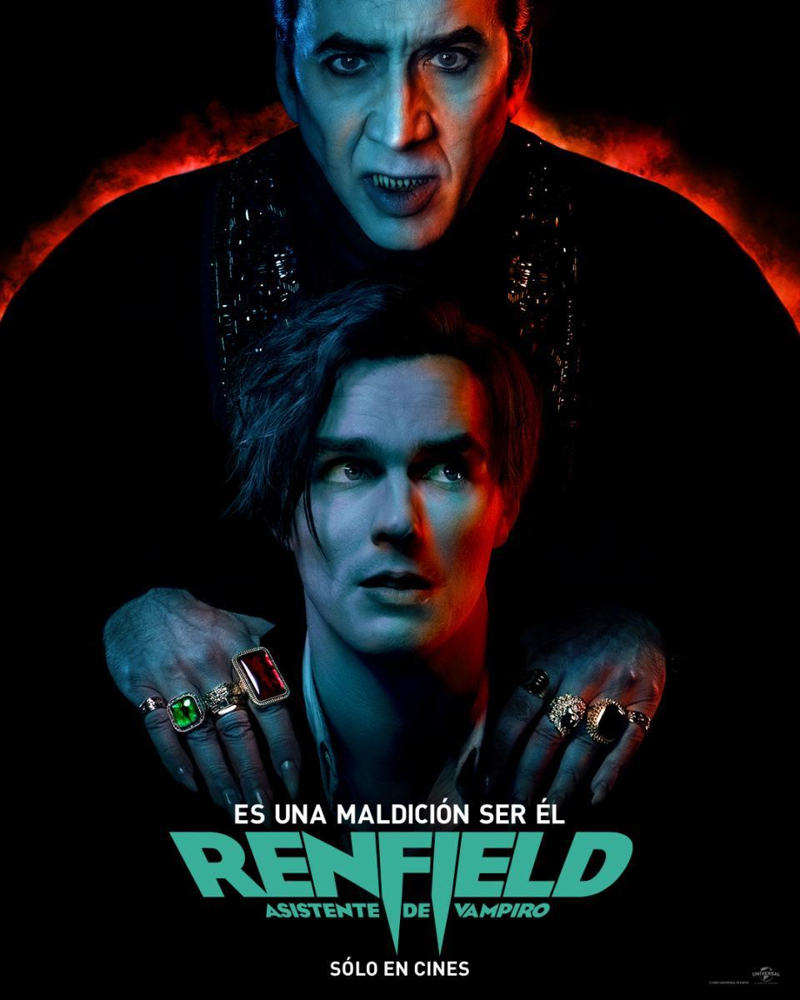
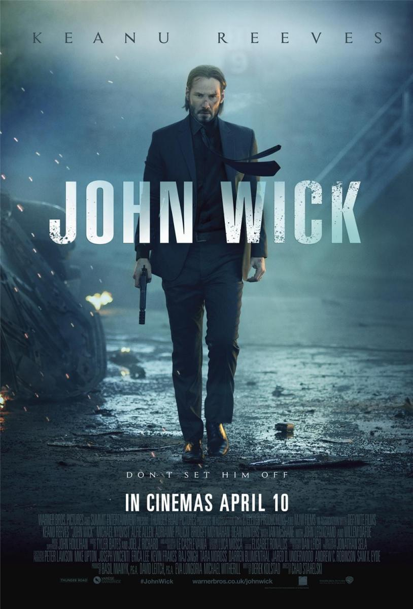

Resistencia
La pelicula narra la historia donde la humanidad avanza tanto tecnologicamente que deciden darle conocimiento y emociones humanas a las maquinas
entonces un dia se termina desatando una guerra entre humanos y maquinas por un error de una ia
la pelicula tiene buenos efectos especiales, la historia es bastante pausada pero a su vez es bastante interesante ver quien de los dos bandos terminara ganando
la quimica que hay entre los dos protagonista tambien funciona muy bien, lo que hace que te preocupes por el destino de ellos
y para finalizar, la pelicula maneja muy bien la pregunta acerca de quien seria mas humanos si las maquinas o los mismos seres humanos
renfield
la pelicula, se trata sobre una comedia oscura sobre dracula y su sirviente renfield
esta pelicula esta plagada de accion y escenas exageradamente violentes, pero detras de todas esas escenas violentes
se oculta tambien una historia de codependencia y de auto amor propio al final
la pelicula es increiblemente entretenida y es bastante gracioso ver a nicolas cage interpretar a dracula
El faro

una historia de terror psicologica llena de suspenso
donde los protagonistas son dos alfareros que tienen que pasar 6 meses vigilando un faro
las cosas que ocurren en ese faro son una increible locura, eso sumado que mientras mas pasan los meses
los dos protagonistas se terminan volviendo locos y el espectador ya no sabe lo que es real y lo que no lo es
pelicula en blanco y negro muy recomendada
John wick
una pelicula de venganza muy buena, donde un ex asesino retirado vuelve a ser el hombre de la bolsa para vengar
al perro que le mataron el cual era el ultimo regalo de su difunta esposa, entonces john wick vuelve de su retiro
para matar al responsable de eso el cual era el hijo de un jefe de la mafia rusa
buena accion, peleas geniales y una buena banda sonora, eso si esta pelicula sabe a lo que va y te ofrece eso buenas escena de accion y unos villanos a lo que odiar